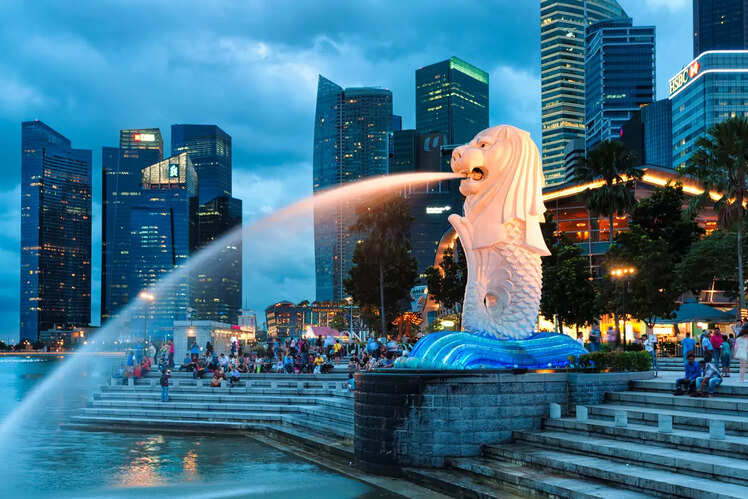
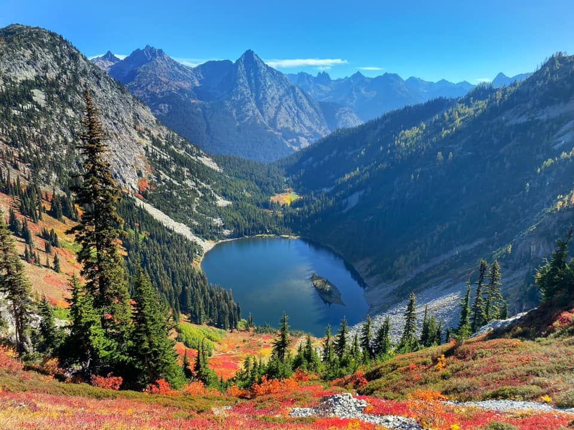

My Top 10 Favorite Places to visit Someday
| Name of Place | Scenery | Description |
|---|---|---|
| 1. Amsterdam |  |
A charming city known for its scenic canlas, historic houses, and vibrant cultural scene. Famous for its cycling culture, museums like the Van Gogh Museum, Anne Frank, and laid-back atmosphere. |
| 2. Tokyo, Japan |
A bustling metropolis blending ultramodern skyscrapers with traditional temples. Known for its cutting-edge technology, street fashion, anime culture, and world-class cuisine |
|
| 3. Singapore |  |
A clean, green, and modern city-state in Southeast Asia. Famous for its futuristic architecture, diverse food scene, efficient public transport, and attractions like Marina Bay Sands and Gardens by the Bay. |
| 4. Paris, France |  |
The romantic capital of France known for its iconic Eiffel Tower,world-class art at the Louvre, and chic cafes. It is a global center for fashion, cuisine, and culture. |
| 5. North Cascades National Park, USA |  |
Located in Washington State, this rugged national park is known for its dramatic alpine scenery, over 300 glaciers, and remote wilderness. Ideal for hiking, camping, and nature lovers. |
| 6. Switzerland |
A pisturesque country in the heart of Europe known for its majestic Alps, crystal-clear lakes, world-class skiing resorts, and high quality of life. |
|
| 7. Venice, Italy |  |
A unique city built on canals, famous for gondola rides, Renaissance architecture, and romantic charm. The absence of roads makes it one of the most unusual and beautiful cities in the world. |
| 8. South Korea |
A vibrant East Asian country known for K-pop, high-tech cities, and rich traditions. Offers a blend of modern culture and historic sites like palaces and temples. |
|
| 9. Rome, Italy |
The historic capital of Italy home to ancient landmarks like the Colosseum , Roman Forum, and the Vatican. A city full of history, art, and delicious Italian food. |
|
| 10. Edinburgh, Scotland |
A stunning city known for its medieval Old Town, elegant Georgian New Town, and Edinburgh Castle. Famous for its cultural festivals and historic charm. |